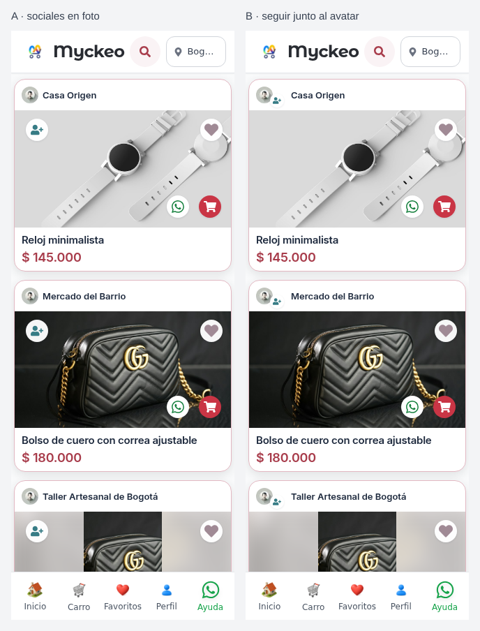
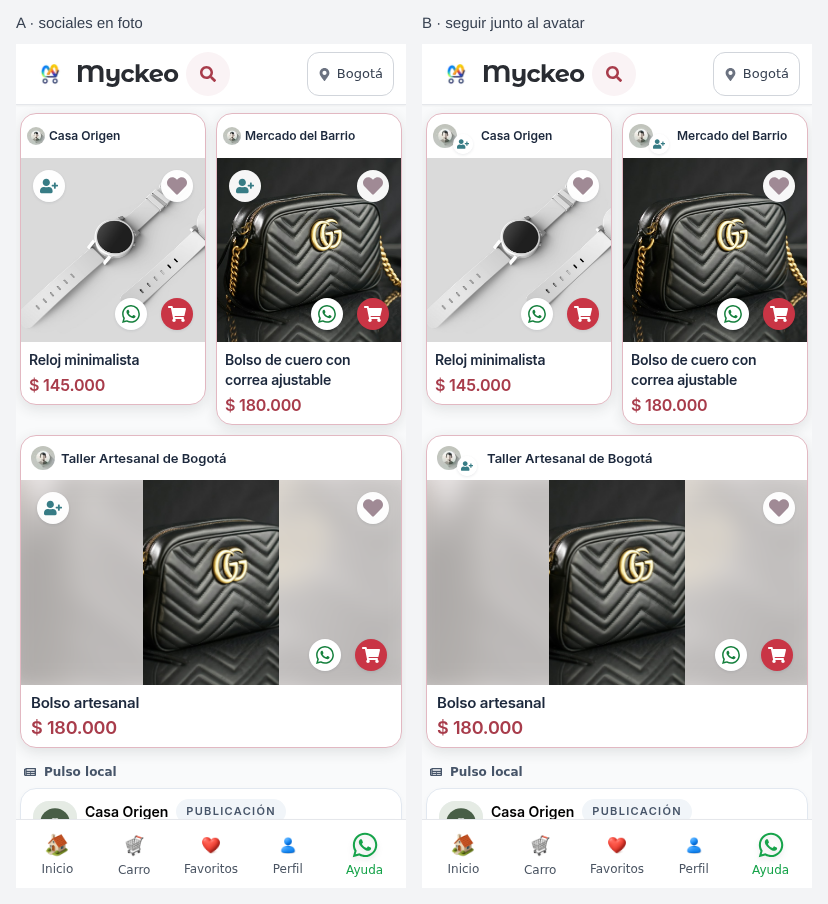
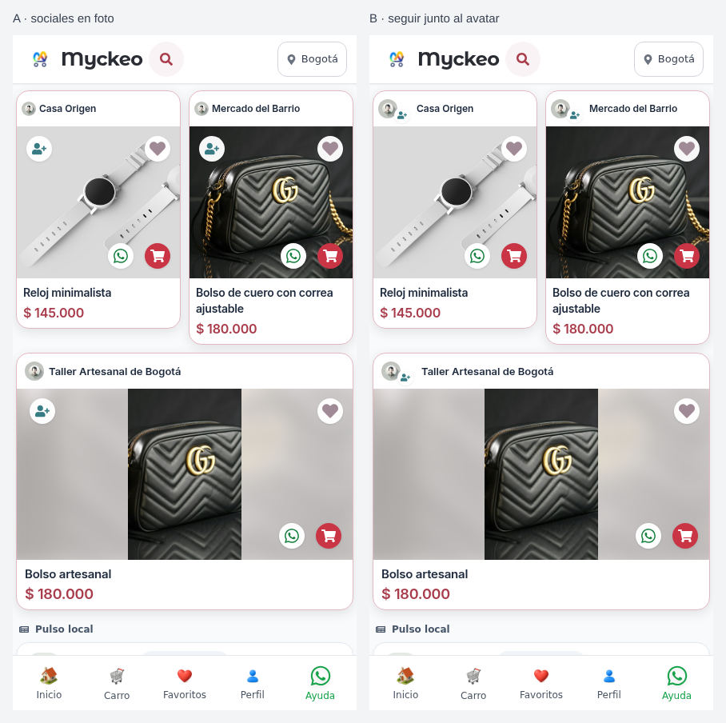
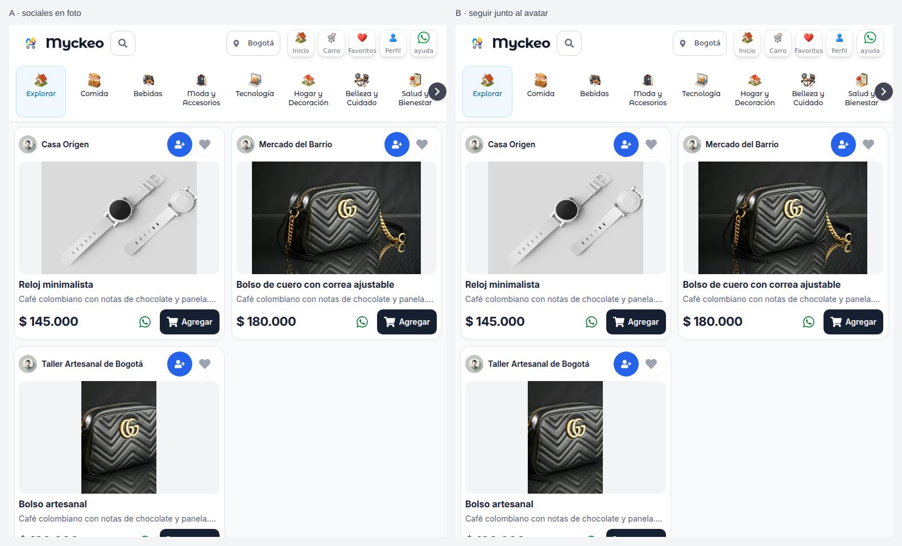
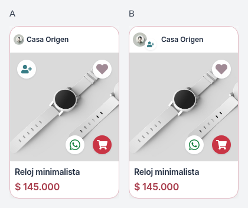
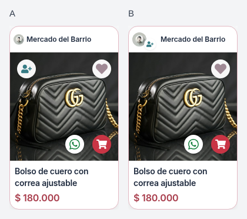
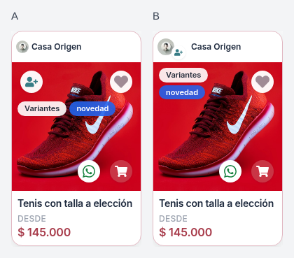
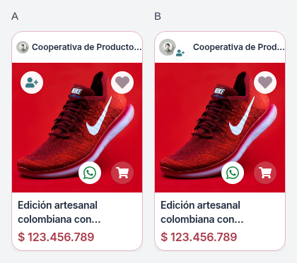
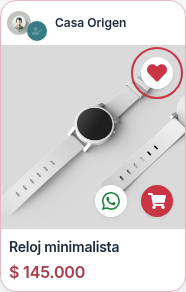

Ambas disposiciones se aplicaron y capturaron secuencialmente en el componente productivo de localhost:3000/. B queda activa. Las comparaciones usan los mismos datos, fotografías y scroll; los PNG conservan los píxeles originales. El visor puede reducir su presentación.








